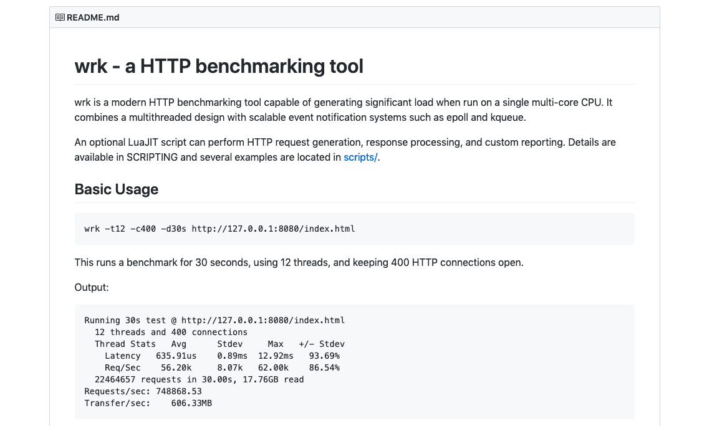

最近听同事介绍，发现了一个新的
HTTP压力测试工具wrk，非常容易上手和使用。wrk使用非常简单，对应的命令行参数也不多，但是足够自己简单压测一些http服务了。官方下载地址为https://github.com/wg/wrk。

1. 工具安装
安装很简单
- 需要自己把源码下载下来，自行编译。
# 源代码编译安装
$ git clone --depth=1 https://github.com/wg/wrk
$ cd wrk
$ make
- 编译完成之后，会在当前目录下生成一个
wrk的可执行文件。为方便以后使用，可以将其复制到系统path路径中。
# 复制二进制文件到对应的PATH目录下面
$ cp wrk /usr/local/bin/
- 当然你为了方便的话，也是可以从操作系统提供的源进行安装的，一样方便。
# Mac
$ brew install wrk
# Ubuntu的话需要先安装luajit工具
$ sudo apt-get install build-essential libssl-dev git
$ git clone http://luajit.org/git/luajit-2.0.git
$ cd luajit
$ make && sudo make install
# 然后用源码安装wrk工具
$ git clone https://github.com/wg/wrk.git
$ cd wrk
2. 使用说明
使用也很简单
- 使用
wrk命令会提示以下使用方式，看看就明白了。
$ ./wrk: invalid option -- 'h'
Usage: wrk <options> <url>
Options:
-c, --connections <N> Connections to keep open(连接数)
-d, --duration <T> Duration of test(持续时间)
-t, --threads <N> Number of threads to use(线程数)
-s, --script <S> Load Lua script file(制定lua脚本)
-H, --header <H> Add header to request(添加请求头)
--latency Print latency statistics(打印延迟分布信息)
--timeout <T> Socket/request timeout(设置请求超时)
-v, --version Print version details(打印版本信息)
<N> 表示数字参数，支持国际单位 (1k, 1M, 1G)
<T> 表示时间参数，支持国际单位 (2s, 2m, 2h)
3. 案例演示
案例依旧很简单
- 我们对于百度进行测试，看看效果。
# 启用100个连接，每个线程并发30个测试线程，压测3分钟
$ wrk -c100 -t30 -d3m --latency http://baidu.com
Running 3m test @ http://baidu.com (压测时间3分钟)
30 threads and 100 connections (共30个测试线程，100个连接)
Thread Stats Avg Stdev Max +/- Stdev
(平均值) (标准差) (最大值) (正负一个标准差所占比例)
Latency 116.04ms 97.56ms 1.81s 58.20% (延迟)[主要关注]
Req/Sec 9.48 8.80 310.00 90.34% (每秒处理中的请求数)[主要关注]
Latency Distribution (延迟分布)[主要关注]
50% 0.00us
75% 0.00us
90% 0.00us
99% 0.00us
158766 requests in 3.00m, 65.86MB read
(再3分钟之内共处理完成了158766个请求，读取了65.86MB数据)
Socket errors: connect 0, read 0, write 0, timeout 2
(Socket错误数统计，0个连接错误，0个读取错误，0个写入错误，2个超时)[主要关注]
Requests/sec: 881.54 (平均每秒262.22个请求)[主要关注]
Transfer/sec: 374.44KB (平均每秒读取数据554.27KB)
4. 扩展功能
使用 Lua 脚本个性化 wrk 压测
- [1] 使用扩展功能
wrk 有个更牛叉的特性就是支持自定义的 Lua 脚本，像往常的压力测试工具，我们只是发起固定的请求，请求体是无法改变的。 但是 wrk 的 Lua 脚本不仅是可以做鉴权签名，可以改变请求体，模拟延迟，通过请求的返回值做些收尾wrk 支持在三个阶段(即 wrk 的生命周期)对压测进行个性化分别是启动阶段、运行阶段和结束阶段。每个测试线程，都拥有独立的 Lua 运行环境。
# 使用Lua脚本的请求方式
wrk -t1 -c100 -d10s -s post_test.lua --latency http://test.com
- [2] wrk 的生命周期
wrk 可以在 Lua 脚本里添加下面的 Hook 函数，你可以想象成生命周期，每个生命周期做的事情都不一样，但是生命周期是有时间顺序的，而我们常用一般是 request 和 delay 周期。
# setup
函数在目标域名或IP地址已经解析完，并且所有thread已经生成
但还没有开始时被调用时，每个线程执行一次这个函数，进行初始化
可以通过thread:get(name)/thread:set(name, value)来设置线程级别的变量
# init
每次请求发送之前被调用，可以接受wrk命令行的额外参数
# delay
这个函数返回一个数值，在这次请求执行完以后延迟多长时间执行下一个请求
可以对应 thinking time 的场景，做请求访问间隔的设定，防止请求被禁用
# request
通过这个函数可以每次请求之前修改本次请求体和Header属性，返回一个字符串
这个函数要慎用其会影响测试端性能，我们可以在这里写一些要压力测试的逻辑
# response
每次请求返回以后被调用，可以根据响应内容做特殊处理，比如遇到特殊响应停止执行测试，或输出到控制台等等。
# delay.lua
# 实现的是每个请求前会有随机的延迟
-- example script that demonstrates adding a random
-- 10-50ms delay before each request
function delay()
return math.random(10, 50)
end
- [3] POST 请求脚本
# post.lua
-- example HTTP POST script which demonstrates setting the
-- HTTP method, body, and adding a header
wrk.method = "POST"
wrk.body = "foo=bar&baz=quux"
wrk.headers["Content-Type"] = "application/x-www-form-urlencoded"
# 调用方式
$ ./wrk -t4 -c100 -d30s -T30s --script=post.lua --latency http://www.douban.com
# post.lua
-- wrk 全局变量，改动之后会影响所有的请求
wrk = {
scheme = "http",
host = "localhost",
port = nil,
method = "GET",
path = "/",
headers = {},
body = nil,
thread = <userdata>,
}
# 调用方式
$ ./wrk -t1 -c10 -d20s -s post.lua --latency http://www.douban.com
# post.lua - json
-- wrk 全局变量，改动之后会影响所有的请求
wrk = {
scheme = "http",
host = "localhost",
port = nil,
method = "GET",
path = "/",
headers = {},
body = nil,
thread = <userdata>,
}
# 调用方式
$ ./wrk -t1 -c10 -d20s -s post.lua --latency http://www.douban.com
- [4] 上传文件
# 实现上传文件测试与json类似
# 同样是设置wrk.body和wrk.headers的值, 只是body较麻烦一些
wrk.method = "POST"
wrk.headers["Content-Type"] = "multipart/form-data;boundary=------WebKitFormBoundaryX3bY6PBMcxB1vCan"
file = io.open("path/to/fake.jpg", "rb")
-- 拼装form-data
form = "------WebKitFormBoundaryX3bY6PBMcxB1vCan\r\n"
form = form .. "Content-Disposition: form-data; name="file"; filename="fake.jpg"\r\n"
form = form .. "Content-Type: image/jpeg\r\n\r\n"
form = form .. file:read("*a")
form = form .. "\r\n------WebKitFormBoundaryX3bY6PBMcxB1vCan--"
wrk.body = form
5. 常见问题
基本没有什么大问题
- 如果我们执行命令的时候，设置
-c参数太大的话，可能导致出现Too many open files的情况。可以通过查看一下系统的配置，调整下配置或者测试的连接数量。
# 设置最大打开文件数量
$ cat /proc/sys/fs/file-max